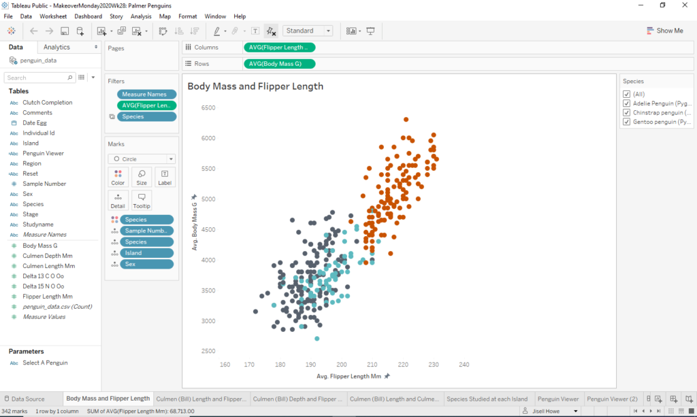
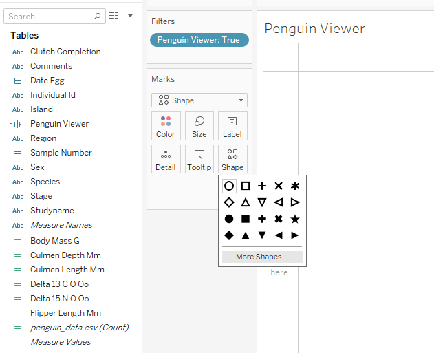
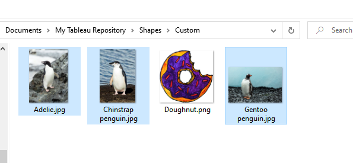
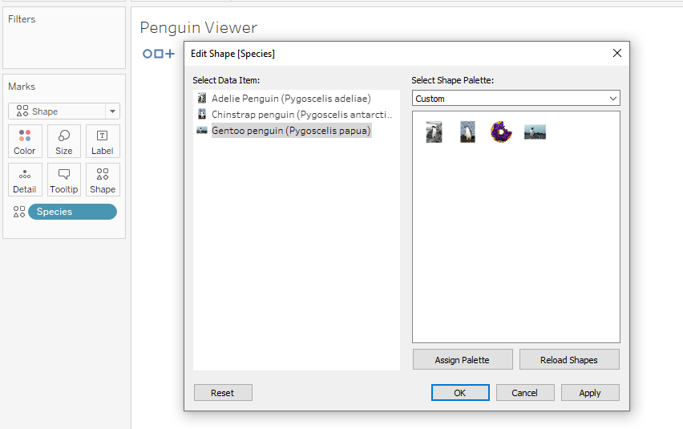
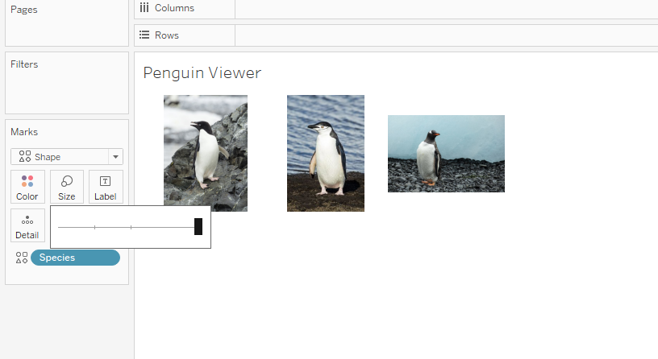
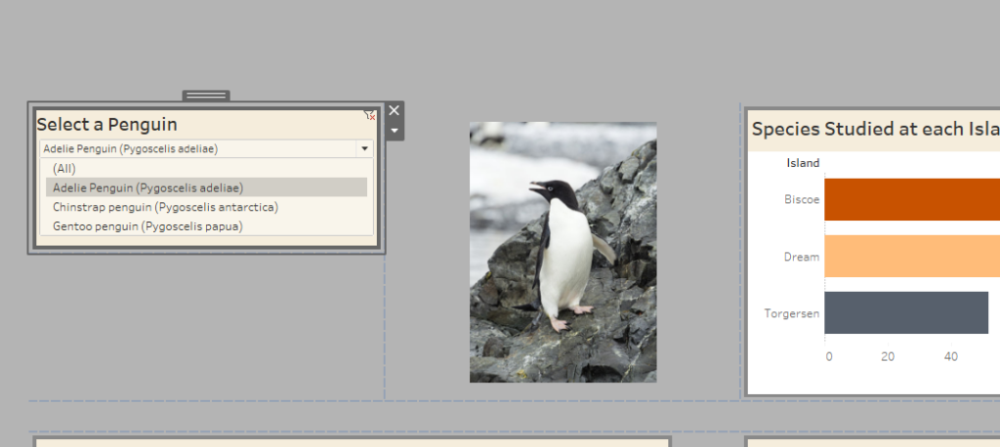
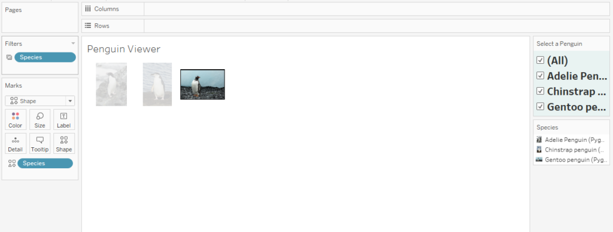
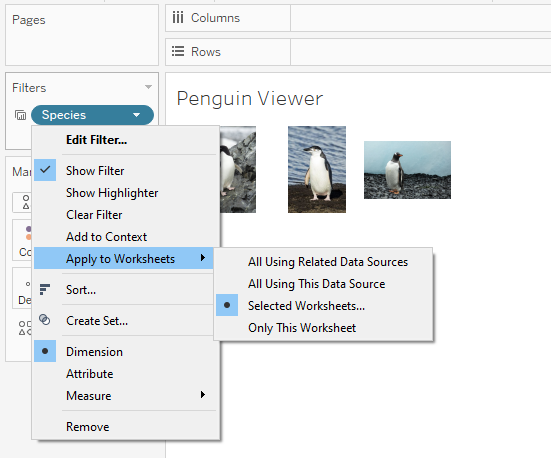
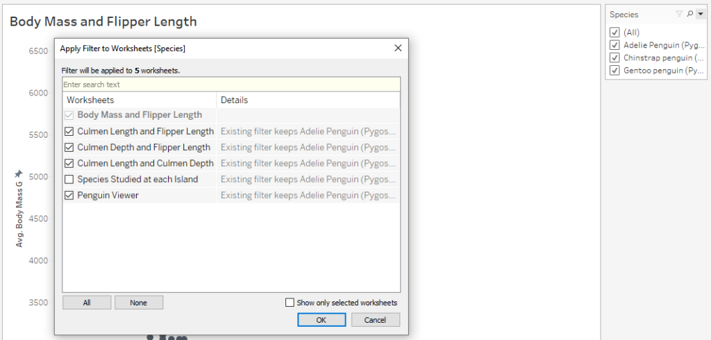
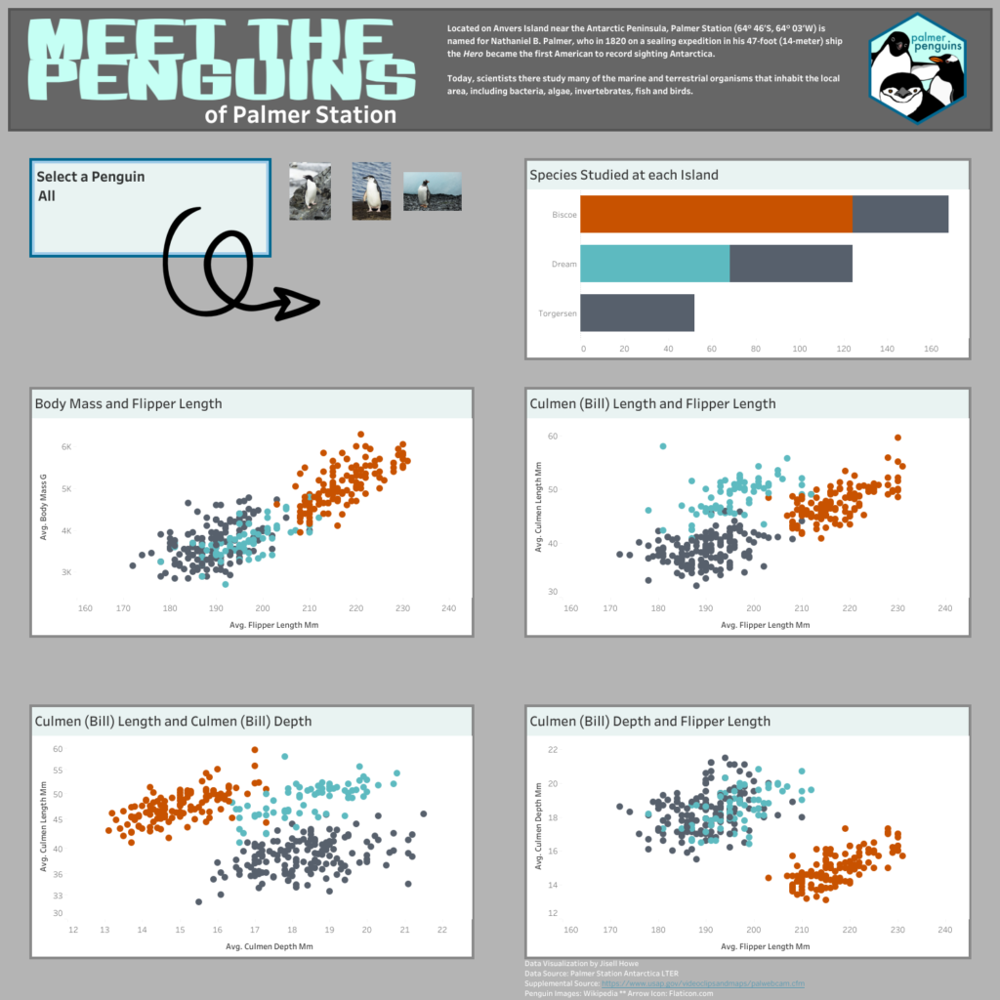

Data visualizations are great, but what if you have a viewer who might not be as familiar with the subject matter? Well, guess what. Tableau can help! By using shapes in Tableau, you can import actual pictures into your dashboard and make them change dynamically based on what you are trying to show the viewer.
To showcase this, check out this analysis on penguins. The pictures of three different penguins can change based on what the viewer picks out from a drop down. I did this because simply reading text saying “bill length,” “bill depth,” and “flipper length” kind of forces the viewer to have to visualize what this penguin looks like compared to the other types. By filtering the pictures and the data for exactly what the viewer picks out, the viewer can get a much better idea of what it all means.
Want to learn how to build it? Read on!
Picture Perfect Penguin Tutorial
To begin, we need to create the first of four scatter plots. You’ll see below here that I have many worksheets in this workbook. That’s because most of them are scatter plots comparing different attributes of the penguins.
The main idea here is two put two of the comparison attributes on the columns and rows shelves and then color code by species. In the screenshot here, I compared Average Flipper Length and Average Body Mass. The “species” field was placed on the color of the marks card.

Note that all the other fields on the marks card are mainly meant for placing within tool tips for later.
Penguin Viewer
From there I created a new worksheet tab and called it Penguin Viewer. I clicked on the Shapes on the marks card and then went to More Shapes.

From there I entered a magical place, the Tableau Repository. It tends to be located here: C:\Users\USERNAME\Documents\My Tableau Repository
Whatever you place in the repository folder structure then shows up as a Shape that can be used in Tableau. What I did here was locate some actual pictures of specific penguins from Wikipedia and placed them in a “Custom” folder I placed in the repository.

As you can see here, the Species field was placed on the Shapes on the marks card. Therefore, when I click on the Shapes button itself, I can assign it a “shape” or specific penguin image.

Once I did that, I made the size of the shapes a bit larger so all three penguin species could be seen side by side.

Penguin Selector
Next, I built a “penguin selector,” which in this case is really just a filter. I did it as a filter as opposed to a parameter this time because it was the easiest way that I could offer singular options as well as an “All” option. This will filter for the correct penguin picture as well as all the corresponding scatter plots that go with it.

Note that the Species field was placed on the filter shelf. There is also a symbol next to it. Hovering over it reveals a drop down menu.

I selected it and then specified “Apply to Worksheets.” What that does is let me pick out specific worksheets where this filter applies.

I specified here that I wanted this filter to apply everywhere but the “Species Studies at Each Island.” I did that because that particular worksheet was a bar chart, and I didn’t want it filtering to just a single bar. It’s not exactly insightful in my opinion to do that, so I unchecked that box.

Doing this eliminates the need for an Action in Tableau to filter for me, so that’s slick. From there, I formatted and designed the dashboard to follow the same color scheme as the Palmer Station penguin logo.
The Final Data Viz
Here is how the final data visualization turned out. The filter was placed on there for the viewer to select. If nothing is selected, it defaults to “All” for all visualizations. Once a different selection is made, all the visualizations (except for the one in the top right) filter for the attributes about a specific penguin type.

Here is the interactive data visualization. Also, here’s a video of how it works.